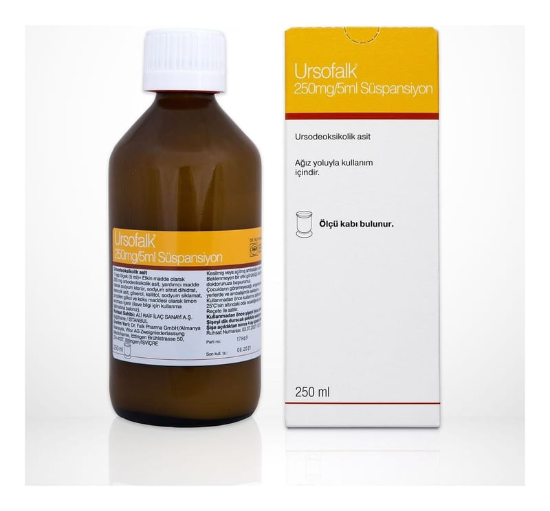

Ursofalk 250 mg/5 ml Süspansiyon, 250 ml

Ne için kullanılır
KT · Bölüm 1▪ URSOFALK®, beyaz renkte, limon kokulu homojen süspansiyondur.
▪ URSOFALK®, her bir 5 ml’lik süspansiyonda (1 kap ölçeğe eşdeğer) etkin madde olarak 250 mg ursodeoksikolik asit içerir.
▪ URSOFALK®, 300 ml’lik şişelerde takdim edilir.
▪ URSOFALK®’ın etkin maddesi olan ursodeoksikolik asit, doğal olarak sığır safrasından üretilen bir safra asidi olup, insan safrasında az miktarda bulunur.
▪ URSOFALK®, “Safra bileşim ve akımını etkileyen ilaçlar” olarak adlandırılan ve mide barsak sistemini etkileyen bir ilaçtır.
URSOFALK®aşağıdaki hastalıkların tedavisinde kullanılır:
• Dekompanse karaciğer sirozunun (karaciğer fonksiyon bozukluğunun vücut tarafından telafi edilemediği evredeki yaygın uzun süreli karaciğer hastalığı) olmadığı durumlarda primer biliyer sirozun (PBS; safra kanalları hastalığına bağlı gelişen karaciğer sirozu) tedavisinde, • Safra taşı bulunmasına rağmen safra kesesi fonksiyonlarının devam ettiği hastalarda, çapı 15 mm’den küçük ve X ışını görüntülerinde gölgeli olmayan (radiolusent) kolesterol safra taşlarının eritilmesinde, • Karaciğer nakli yapılmış hastalarda safra taşı/kolestaz (safra akışının yavaşlaması veya durması) profilaksisinde (önlenmesinde), • Gebeliğin intrahepatik kolestazında (gebeliğin ikinci yarısında östrojenin safra asitlerinin atılımını engellemesi sonucu yaygın kaşıntı ile ortaya çıkan ve gebeliğin sonlanması ile birlikte sona eren bir karaciğer hastalığı), • Kistik fibroz (akciğer, böbrek veya pankreasta bozukluğa neden olan kalıtımsal bir hastalık) ile ilişkili hepatobiliyer (karaciğer, safra ve safra yolları) hastalıklarında kullanılır.